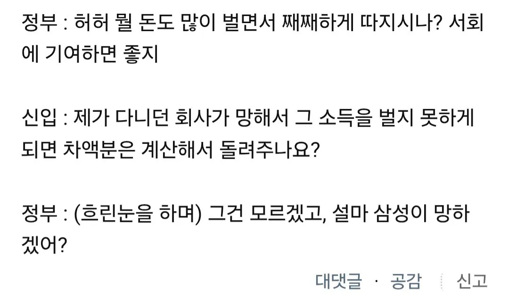
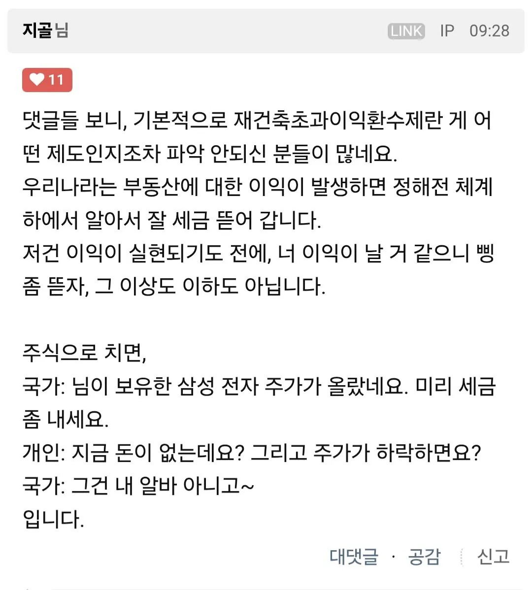

대폭락을 대비해야한다면서 왜 재초환을 함?


대폭락을 대비해야한다면서 왜 재초환을 함?
저 글 쓴놈도 좆도 모르면서 쓴 똥글이고 퍼온놈은 저 똥같은 글에 설사같은 사족까지 달았네
이딴놈들이 선동글쓰고 렉카질까지 하니 부동산이 오르지
헌법에 대하여 교양으로라도 공부를 하였으면 이런 주장이 없었을텐데...
우리나라는 자본주의 시장경제를 인정하되 국가가 개입하여 사회적 불평등을 완화하고 복지를 증진하는 수정자본주의국가임.
이과정에서 개인의 침익이 있을수 있고 개인의 침익과 공공의 이익을 비교하여 공공의이익이 더 크다 라고 헌재는 판단한것임
기본권의 침해가 아니다 가 아니고 침해는 맞지만 나라의 국가운영 방향이 손해 보는 일부가 참아라 이거다.
이건 나중에 사회적 인식이 변하면 물론 변할수도 있지만서도 지금 행정부와 입법부의 입장에서는 올바른 정책적 기조라는거지 결국 국민인 우리가 뽑았고 우리가 선택한 결과라는것임
여기서 나는 1찍 안했는데요 이런 무식한말 하는놈은 없길바란다...
군대도 여자 안가지만 남자들이 참아라
여러분은 지금 집 가격이 10억 20억씩 올라서 세금내야 할 부자들을 걱정하는 자산 5억도 없는 사람들의 댓글들을 보고 있습니다.
저지능한 렉카질은 붐업이야
국가가 직접 하는 적법하고 정의로운 수탈
서울 수십억대 집 가진 사람을 우리가 왜 걱정해줘야 하지???
재건축 안하고 그냥 살면 세금 낼꺼 없고 아무 문제 없을텐데
재건축할때 원래 건축물 그대로 용적률 받고 개발하면 재초환이고 나발이고 세금 더 낼 필요없음
근데 국가에 나 이 건물 다시 인허가 받아서 용적률 다 찾아먹을거야 라고 하니까 그거에 대한 세금을 받는게 재초환인거임
결론은 저기 삼전 예시는 개병신이란 소리다
위에 청약 당첨자한테도 받자는 놈은 그냥 개빡통수준이고
이익이 날걸 뭐 미리받고 지랄을 떠나서
그냥 니네 단지가 기존보다 용적률 더 받을꺼니까 그건 그 땅의 가치를 국가에서 추가로 부여해주는거니 당연히 세금내야지 뭔 시바 미래 수익에 대해 미리 걷니마니 지랄 ㅋㅋㅋㅋ
용적률 더 받아먹으면서 이미 기부채납 하지 않음? 땅 일부를 내놓잖아
그거 일부 임대주택으로 받고 그러는건데 임대주택 들어온다고 개거품물고 데모하고 하는거 맨날 보잖냐
임대주택도 임대주택인데 아예 땅 일부를 떼어서 지자체 공원 이런거로 만들어
그리고 개거품 물고 데모해도 결국 들어오잖아
기부채납안하고 용적률 안받으면 될텐데 왜 할까
기부채납하고 용적률 더 받는다는 자체가 추가 이익인거임
꼬우면 채납안하고 용적률도 안받고 지금 건물 용적률 그대로 올려서 일반분양분 없이 전부 부담금으로 납부해서 새건물 올리면 되는거야
실제로 이렇게 해서 부담금으로 전부 부담하고 용적률 안받으면 재초환 없음
어차피 용적률 법적 제한이 있잖아
재건축하는건 그 제한보다 현재 상태가 용적률 제한보다 낮은 상태고
그 한도까지 올리는게 잘못된거임?
그렇게 하는데 기부채납까지 하는것도 사실 나라에서 이미 뜯어가는건데 거기에다가 추가이익이니까 돈을 더 내라는거잖아
사람이 돈 벌려는 욕심이 있는건 당연한거고 돈을 벌지 않을거면 재건축 당연히 하지도 않겠지
그냥 한번 지어진 아파트는 재건축 안하면 좋겠다는게 너 생각임?
용적률이 늘 똑같은게 아님 30년전 건축할때 그 용적률을 받은건 그 땅이 받을 수 있는 용적률이 그정도가 한계였기 때문임. 그게 아니라면 시행자가 병신이라는 소린데 그럴리가 없잖음
실제 일반주거지역의 용적률도 국계법에 따라서 달라지기도 하고 조례에 따라 달라지기도 함
그리고 용적률은 기준 허용 상한 이렇게 3가지로 나뉘었는데 기준 용적률을 넘어가면 인센티브를 받고 추가로 용적률을 받게 되어있고 그건 재건축도 예외가 아님
위에서 쓴대로 기부채납으로 추가 용적률 받는 걸 대체했다고 하니까 하는 말인데 그럼 기부채납 안하고 용적률 안받으면 되는거 아님? 어차피 이익 보는거만큼 다 기부채납으로 뱉어내는데 추가용적률 왜 받음?
돈벌려는 욕심으로 새아파트 지어서 헌거+개발비로 새아파트 비싸게 파는건 상관없는데
용적률을 더 받거나하는건 초과이익이라고 볼 수 있는거임 그래서 헌법에서도 타당하다 하는거고
재건축 당연히 해야지 뭘 안하면 좋음
다만 국가의 공공재를 더 챙겨가서 돈을 더 땡겨가는 거라면 당연히 국가입장에선 세금을 뜯어야겠지요?
재초환이야말로 국민 수준을 제일 잘 나타내는법이라 나는 아주 좋아함 ㅋㅋㅋ 개돼지들의나라~
헌재가 개돼지는 아니잖아.
어쨌든 합헌이라니 더이상 할말이 없음.
RIP 재건축.
그.. 미안한데 그렇게 "자본주의적"으로 따지기 시작하면 말이지, 기본적으로 세금은 그냥 낼 이유가 없다. 소득세 왜 내야하냐? 부가가치세 왜 내야하냐? 양도세는 왜 내야하고? 자본주의적 논리로 이걸 합리화할 수 있냐? 요컨대 왜 하필 소득세율 구간이 이렇게 정해졌고 퍼센티지는 이렇게 정해졌으며 왜 하필 소득세는 누진적으로 올라가며 등등을 본문에서 말하는 자본주의의 내적 논리(미래 소득이 어쩌구 저쩌구 하는 것)로 설명할 수는 없다는 거지. 그렇게 좋아하는 자본주의의 계산으로 생각을 해보면 너희들이 내는 세금은 하나같이 아무 짝에 쓸모도 없고 이유도 없는 것이다.
왜 돈 좀 더 번다는 죄로 하찮은 거지, 노숙자, 장애인들을 먹여 살려야 하나? 심지어 노숙자나 거지들은 사지 멀쩡하게 달려놓고 일도 안하는 버러지들 아닌가? 왜 나는 자식도 없는데 내가 돈 좀 더 번다는 죄로 희한하게 세금 더 걷어서 그 놈들 교육이나 시켜줘야 하나? 왜 내가 늙지도 않았는데 노친네들 장기요양보험금따위를 내 줘야 하나? 나는 내 노후 알아서 대비해서 그따위 보험 필요없는데?...
그래서 정신나간 일부 자본주의자들은 "국가는 좆같이 규제하고 뭐 세금 붙이고 하지 마라" 하는 이상한 사상을 가지게 됐는데 그게 소위 말하는 신자유주의다.
어찌됐건 가타부타 따져봐야 헛소리라는 거야. 닥치고 내던가, 꼬우면 죽창 들고 일어나. 그건 무섭지? 그게 국가가 있는 이유란다. 바로 그런 거지나 한량, 노숙자 따위의 잃을 것 없는 놈들이 죽창들고 집 가지고 회사 가지고 자본 가지고 토지 가진 놈들 배때지를 안 가르게끔 할려고 있는거라고. 뒈지기 싫으면 그냥 내라.
다 이해하겠어 근데 중산층까지 옥죄니까 좆같은거라고 중산층까지 걍 서민 틀에 가둬놓고 지들이 선인척 정의인척 깝죽거리니 좆같은거야
좆같고 꼽지? 그러면 들고 일어나라. 죽창 총칼들고 정치인들 다 찔러죽일 생각으로 봉기해서 시청에 불을 지르고 청와대를 개박살을 내라. 실제로 프랑스에서는 그렇게 하고 있는 사람들도 지금 존재하고, 역사적으로도 수없이 있었지. 그 사람들이 그렇게 할 수 있었던 이유? 그들은 잃을 것이 아무 것도 없었으니까. 맑스가 공산당 선언에서 "그대들이 잃을 것은 쇠사슬이요, 얻을 것은 전 세계다."라 쓰고, 인터내셔널가에서 "아무 것도 아니었던 자들이 모든 것이 되리라."라 노래하는 것은 다 이유가 있는거야. 잃을 것이 쇠사슬밖에 없는 자, 말 그대로 목숨 말고는 아무 것도 가지지 못한 인간들이 아니면 그런 미친 짓을 못하거든. 못하는 놈은 아직 잃을 것이 많이 남아 있는거고, 그렇다면 그냥 군말없이 세금 갖다 바치는 수 밖에 없는거야.
이 글 본문에서 좋아하는 "자본주의" 이야기로 세금을 하나 하나 방법적 회의처럼 다 쥐어패다 보면 남는 것은 "세금 안내겠다"는 말 밖에 없는데, 투표로 뭐 다른 정당을 뽑든 뭘 하든 그들이 국가인 이상 세금을 걷어야 하거든요. 그런데 혁명 할거야? 하다못해 아나르코 생디칼리슴적 공동체도 공동부담금 정도는 내는데 말이지, 그렇게 혁명해서 만들어야 할 국가는 세금 없는 국가라는 형용모순이니까, 국가가 없는 지대, 아나키즘도 아니고 그냥 아노미 상태가 되어야 하는 것 아닌가? 자칭 중산층 쁘띠부르주아지라면 스스로의 계급적 위치를 정확히 인식하는게 좋다. 혁명적 아노미 상태에서 가장 손해보는 자들이 중산층인데 뭔 군말이 많아. 닥치고 내야지. 혹은, 그렇게 "기분" "심기" 따위가 소중한 가치라면 그것에 의지해서 모든 이뤄온 삶을 내다버리고 프롤레타리아트가 되어 죽창을 들던가.
많이 힘드냐?
만두 한 쪽이라도 얻어먹을 수 있다고 생각하는 자는 만두접시를 노리지 않으니까요. 구걸에 맛을 들린 자는 절대 대들지 못합니다.
드라마 정도전의 이인임 대사
적선 해줘야겠지?
만두를 사먹었으면 만두값 말고도 vat도 내야 됩니다 손님
비유 참 못하네.....
그것이.클리앙.영포티니까
정확히는 준공후 시가가 아니라 공시가격에 의해 결정됨. 거기다가 장기보유자는 70% 세금 감면됨.
재건축한다고 도로 방해하고, 분진날리고, 소음 공해로 민원 발생 처리비는 세금으로 처리하고 이익은 내 손에?는 말이 안되는거임.
재건축기간동안 인프라 사용 유지 및 정비에 대한 세금이라고 봐야지.
그리고 장기보유자가 4억씩 내려면 30억씩 미실현 손익(공시가)이 있다는건데 꼬우면 팔고 가셈. 절중떠임 ㅎㅎ
그러면 재개발이나 리모델링에는 안걷으면서 재건축에만 걷는다는건 어떻게 설명함?
니말은 전혀 설득력이 없음
재개발은 공익적 성격도 있고, 리모델링은 개정해서 걷는다해도 0원일걸? 공시가 기준으로 내는거기 때문에
벌었으면 세금내야지
벌긴하냐?
세금을 무순 이중삼중으로 쳐 가져갈 궁리만 하네
으휴
무식한 새끼 으휴
ㅋㅋㅋㅋㅋ
이건 새로생긴 법이 아님. 20년도 넘은 법임. 당시에는 재건축만 하면 업자들과 아파트주인들이 떼돈벌던 때에 만들어진거임.
3억하던 아파트가 5억짜리 아파트로 바뀌었는데도 세금을 안걷다가 세금을 걷으려고 만든게 재개발초과이익환수제임
그냥 깔고 앉아만 있었는데 오른게 아니라 이익을 위해 재개발이라는 사업을 벌이고 이익이 생겨서 세금을 매기겠다는건데 여기에 어디에 부당함이 있고 강탈이 있음? 그래도 세금내기 싫어 사람들이 들고 온 게 미실현 이익이란 표현임
그럴듯하게 들리지만 그냥 반대를 위해 만든 프로파간다임. 쟁점은 이거임. 법은 준공시점에 새 아파트가 구축 아파트보다 더 비싸다? 그러면 이미 이익이 실현된 것으로보고 이익에는? 세금을 걷는다라는 취지이고 세금내기 싫어 사람들 주장은 아니다 내가 팔아야 이익이다. 아직 미실현된 이익에 세금을 걷는다고? 도둑질이다 이런 주장인건데, 가만히 앉아 있었는데 집값이 오른거에 세금을 걷진 않지. 재개발 결정시점에 보상을 받고 나가지 않고 조합에 남아서 참여한다는것 자체가 이익추구 행위로 간주되고 준공시점 신축 아파트값이 구축보다 올랐다면 이익이 실현됐다고 보는게 법원의 판단임. 팔아야 이익이다! 미실현 이익에 매기는 세금이다라는 주장은 당연히 까였고 행정소송 헌법재판까지 다 끝난 사안임.
여기 댓글에 나중에 아파트값이 구축 값보다 더 떨어지면 환불해주냐는 멍청이까지 나오던데 설명 아무리 해줘봤자 안읽고 이해하려하지 않거나 이해못하거나 하는 애들은 답이 없음
그리고 구간별로 공제도 해주고 요즘같이 사업성이 떨어져서 분담금을 내야하는경우면 분담금도 공제하고 세금매김
내가볼땐 단 하나도 논란거리가 없는 주제이지만 그래도 세금 내기 싫어 사람들은 항상 존재하니 이런 옛날 얘기도
계속 파묘되서 올라오고 하는거라고 이해는 함
그리고 처음에 말했듯이 20년 된 제도임. 글 작성자는 굳이 "대폭락을 대비해야한다면서 왜 재초환을 함?"이라는 사족을 달면서 스스로 멍청함을 증명함. 모르면 그냥 퍼오기만 했어야지 사족은 왜 붙여